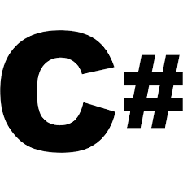
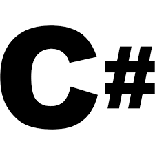

First Year
- Business Technology
- Visual web development
- - Introducing the fundamentals of programming using C#
- Database system Management
- - Understanding and designing database structure and design
- Information Systems Development
- - First look at the entire development life cycle
 
